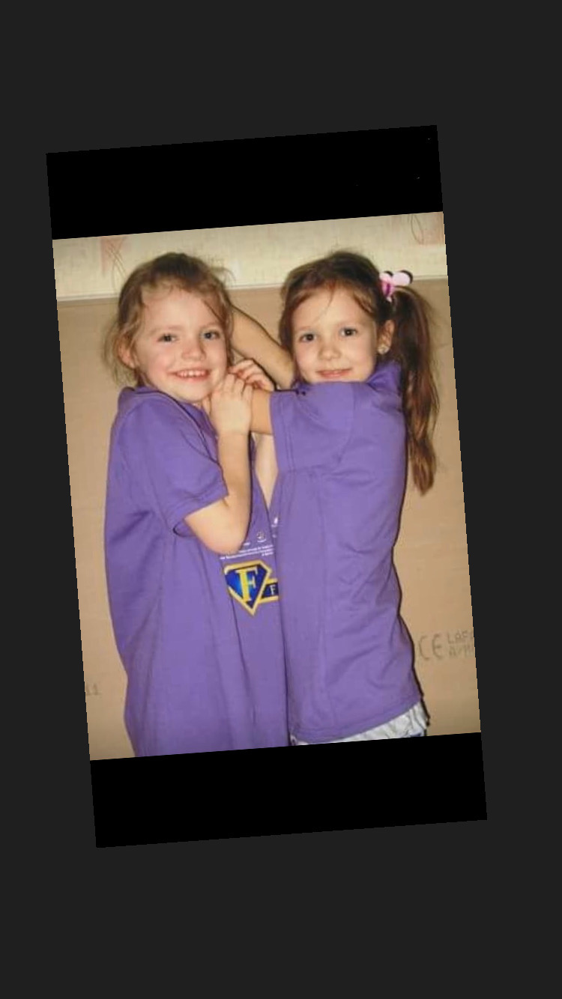
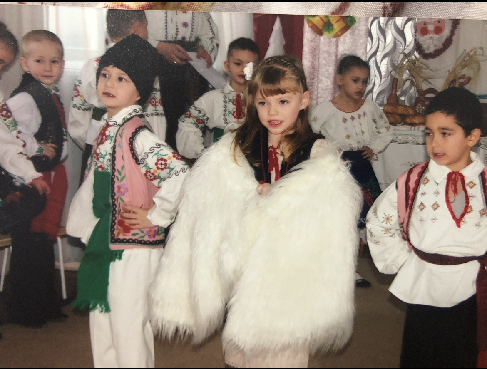

Copilaria mea:

- Toata viata mea am fost un copil activ si sociabil.Mereu participam la toate evenimentele. Spiritul meu competitiv cred ca s-a nascut atunci. Mereu dorind sa castig. Eu si prietena mea, intotdeauna ne intreceam:
- cine ajunge mai repede pana la copac?
- cine mananca mai repede un mar?
- cine vorbeste mai repede?
Aceasta lista poate continua la infinit.

- Desigur ca iubeam atentia(mai mult ca acum).Doream sa ma aflu in centrul tuturor spectacolelor(ca in imaginea alaturata, unde jucam rolul principal al caprei intr-o sceneta pentru parinti, cu ocazia sarbatorii de Anul Nou). Pana acum tin minte acele momente cum le ziceam eu de glorie.
.
- Fiind un copil bilingv, mi-a fost greu sa incep a vorbi, dar asta nu m-a incurcat sa indragesc cititul. Umblam cu cartea dupa mine si ii rugam pe toti sa imi citeasca din ea.
Cartile mele pereferate din acea perioada:
- ,,Harry Potter" J.K.Rowling
- ,,Micul print" Antoine de Saint-Exupery
- ,,Aventurile lui Tom Sawyer" Mark Twain
- ,,Calatorie spre centrul pamantului" Jules Vernes